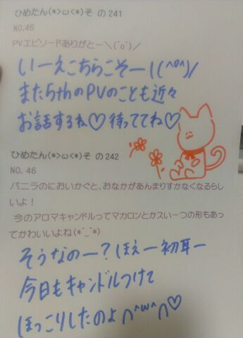
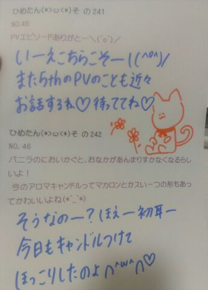

ひめたん大図鑑とは何か。
それは、ひめたんが受験とかテストとか
テストとかテストでちょーっと日記書く時間がないぞーって時に登場する、
いわゆる「過去の質問返しをまとめたもの」って感じかな。
過去なので時制とかおかしなことになる質問も中にはあるかもだけど、
ま、そゆことなんでね(*^^*)
893 高校生になったらこんなことがしたいっていうのある?
高校生になったらこんなことがしたいっていうのある?
894高校だったらどんなことに挑戦したいですかっ
とりあえずお勉強も活動も両方頑張るのと、あとは自メイクできるようになりたい!
アイドルだし人数多いし、時間ないときはお姉さんたち自メイク頑張っとるもん。
895日芽香とPerfume語るには勉強したほうがいいですか?(笑)
いやあ好きなら詳しい詳しくない関係ないですよっ
ひめたんもそんな語れるかしら?
とにかく憧れますね(*'`*)
896俺の相談にものってくれる?
もちろん!
...いやコメント欄に相談事書くのは勇気がいるよね。
今度会ったとき?お手紙とか?
いつでも話聞きますよ＼(^O^)／
897キャッチフレーズを教えて下さい
っはい。えー
乃木坂1の甘えん坊で寂しがり屋な中学3年生15歳の中元日芽香です。
ひめた〜んって呼んでくださあい♪
よろしくお願いします(^^)
↑これね。
みんな真似してくれる!
みんないわくあみあみ(能條愛未chan)のが似てるらしいんだけど...
いや似てなーいっ!!!わら
898淋しい時は必ずブログ更新よろしくお願いしますこれ質問なので答えください
えっつと...。
これ質問なのね☆?
わかりましたっ。寂しくなったらいつでも更新するから
みなさんも寂しくなったらひめたんのブログ遊びに来て?
多少寂しくなくなるだろうからさ。ね?約束よ?
899東京にきたら乃木坂のイベントや収録にもっとでられるようになる?
そうですねーとりあえず声がかかった時すぐに駆け付けることはできる!
声がかかるかどうかはひめたん次第なのさっきらりーん(*゜`*)☆
900ひめたんから見て19歳の人って大人かな?19歳の乃木坂メンはどうっ?笑っ
普通に「19歳」ってきいたら(へぇー。お兄さんお姉さんだ...。)ってなる!
乃木メンは歳とか意識しないからなあどうだろう。
901ひめきゅんやブログのコメントに年齢制限はありませんか?
ないないまったくないないない!
ひめきゅんのみなさんいつもありがとーう(o>ω<o)!
902仲良しの3人組を一緒に神推ししてもいいですか?
逆に聞いちゃう推してくれるの?
喜んでっ(^^)☆
9033年生ってやっぱり辛かったですか?
ってよく聞くけどね。
ひめたん的にはあんま辛いとかなかったかな。
むしろめちゃ楽しかった(^^)!
行事とか一番盛り上がるし、クラスもいい人ばっかりだったもん♪
904卒業式、泣きましたか?(笑)
もはや泣いたとかってレベルじゃないの。号泣!!!
うわ〜えんえんえ〜ん!
ってなってた(*^^*)ふふふ
905暇がある時何してる?
お散歩・音楽聴いてる・誰かとメールしてる!
「実はお菓子食べてんでしょ?」なんて聞いたら失礼よ(*゜`*)
ま実際のところ食べてないけどさ?どやっ
906今までで一番の思い出って何?
スクールの発表会、メンバーとのお泊まり、卒業式、
全部いちばんの思い出。∪・ω・∪。
907お風呂の中で歌を唄ってる?
今のおうちでは唄ってないけど...
どこであろうと気付かないうちによく唄ってる♪
で、メンバーみんなに「唄うねぇ!」って突っ込まれる。
地元の友達は慣れっこだからスルーしてくれる。
唄うの好きなんだもん∩^ω^∩☆
908裸眼男子と眼鏡男子どっちが好きかな??
普段は裸眼な男子がたーまーにめがねをかけると
おんなのこはみんなきゅんきゅんする(//ω//)はず。
大切なのはギャップ!
909暮らして東京と広島の違いってある??
東京はごみ分別が甘いよね。広島は厳しいよー?
それから、東京来てから歩くことが増えたと思う(ω)いいこと♪
910東京は好きになれそう?
好きになりますよ!
いやもともと好きよ?
ひめたんどんな形であれ東京に住みたいってずっと思ってたの(*^^*)
911エリアメールってなに...??
そうだよね。
ひめたんも広島おった時はエリアメールなんて受け取ったことなかったもん(`・ω・')
気象庁からの緊急地震速報。震源をお知らせしてくれます!
912防災グッズは準備してありますか???
まったくですよ(ノω;`)るるる
913祝!東京での新生活、期待と不安はどっちの方が大きいですか?(^-^)
期待っ
不安はこれだけしかありません!
...て言いながら指で不安の大きさを表しても伝わらないのがブログ(・・;)
これだけ。これだけだってば!

(＊´・ω・＊)
それは、ひめたんが受験とかテストとか
テストとかテストでちょーっと日記書く時間がないぞーって時に登場する、
いわゆる「過去の質問返しをまとめたもの」って感じかな。
過去なので時制とかおかしなことになる質問も中にはあるかもだけど、
ま、そゆことなんでね(*^^*)
893
高校生になったらこんなことがしたいっていうのある?894
高校だったらどんなことに挑戦したいですかっとりあえずお勉強も活動も両方頑張るのと、あとは自メイクできるようになりたい!
アイドルだし人数多いし、時間ないときはお姉さんたち自メイク頑張っとるもん。
895
日芽香とPerfume語るには勉強したほうがいいですか?(笑)いやあ好きなら詳しい詳しくない関係ないですよっ
ひめたんもそんな語れるかしら?
とにかく憧れますね(*'`*)
896
俺の相談にものってくれる?もちろん!
...いやコメント欄に相談事書くのは勇気がいるよね。
今度会ったとき?お手紙とか?
いつでも話聞きますよ＼(^O^)／
897
キャッチフレーズを教えて下さいっはい。えー
乃木坂1の甘えん坊で寂しがり屋な中学3年生15歳の中元日芽香です。
ひめた〜んって呼んでくださあい♪
よろしくお願いします(^^)
↑これね。
みんな真似してくれる!
みんないわくあみあみ(能條愛未chan)のが似てるらしいんだけど...
いや似てなーいっ!!!わら
898
淋しい時は必ずブログ更新よろしくお願いしますこれ質問なので答えくださいえっつと...。
これ質問なのね☆?
わかりましたっ。寂しくなったらいつでも更新するから
みなさんも寂しくなったらひめたんのブログ遊びに来て?
多少寂しくなくなるだろうからさ。ね?約束よ?
899
東京にきたら乃木坂のイベントや収録にもっとでられるようになる?そうですねーとりあえず声がかかった時すぐに駆け付けることはできる!
声がかかるかどうかはひめたん次第なのさっきらりーん(*゜`*)☆
900
ひめたんから見て19歳の人って大人かな?19歳の乃木坂メンはどうっ?笑っ普通に「19歳」ってきいたら(へぇー。お兄さんお姉さんだ...。)ってなる!
乃木メンは歳とか意識しないからなあどうだろう。
901
ひめきゅんやブログのコメントに年齢制限はありませんか?ないないまったくないないない!
ひめきゅんのみなさんいつもありがとーう(o>ω<o)!
902
仲良しの3人組を一緒に神推ししてもいいですか?逆に聞いちゃう推してくれるの?
喜んでっ(^^)☆
903
3年生ってやっぱり辛かったですか?ってよく聞くけどね。
ひめたん的にはあんま辛いとかなかったかな。
むしろめちゃ楽しかった(^^)!
行事とか一番盛り上がるし、クラスもいい人ばっかりだったもん♪
904
卒業式、泣きましたか?(笑)もはや泣いたとかってレベルじゃないの。号泣!!!
うわ〜えんえんえ〜ん!
ってなってた(*^^*)ふふふ
905
暇がある時何してる?お散歩・音楽聴いてる・誰かとメールしてる!
「実はお菓子食べてんでしょ?」なんて聞いたら失礼よ(*゜`*)
ま実際のところ食べてないけどさ?どやっ
906
今までで一番の思い出って何?スクールの発表会、メンバーとのお泊まり、卒業式、
全部いちばんの思い出。∪・ω・∪。
907
お風呂の中で歌を唄ってる?今のおうちでは唄ってないけど...
どこであろうと気付かないうちによく唄ってる♪
で、メンバーみんなに「唄うねぇ!」って突っ込まれる。
地元の友達は慣れっこだからスルーしてくれる。
唄うの好きなんだもん∩^ω^∩☆
908
裸眼男子と眼鏡男子どっちが好きかな??普段は裸眼な男子がたーまーにめがねをかけると
おんなのこはみんなきゅんきゅんする(//ω//)はず。
大切なのはギャップ!
909
暮らして東京と広島の違いってある??東京はごみ分別が甘いよね。広島は厳しいよー?
それから、東京来てから歩くことが増えたと思う(ω)いいこと♪
910
東京は好きになれそう?好きになりますよ!
いやもともと好きよ?
ひめたんどんな形であれ東京に住みたいってずっと思ってたの(*^^*)
911
エリアメールってなに...??そうだよね。
ひめたんも広島おった時はエリアメールなんて受け取ったことなかったもん(`・ω・')
気象庁からの緊急地震速報。震源をお知らせしてくれます!
912
防災グッズは準備してありますか???まったくですよ(ノω;`)るるる
913
祝!東京での新生活、期待と不安はどっちの方が大きいですか?(^-^)期待っ
不安はこれだけしかありません!
...て言いながら指で不安の大きさを表しても伝わらないのがブログ(・・;)
これだけ。これだけだってば!

(＊´・ω・＊)
 ひめたんは家族に会えんはときやっぱりホームシックになるかな?
ひめたんは家族に会えんはときやっぱりホームシックになるかな?